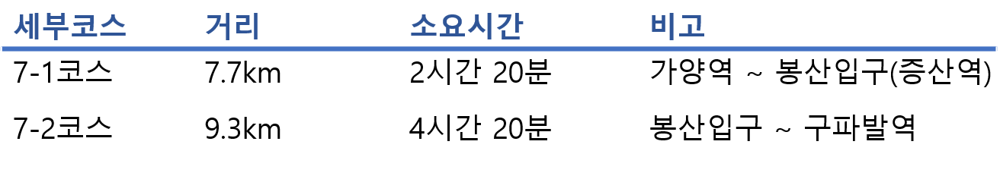
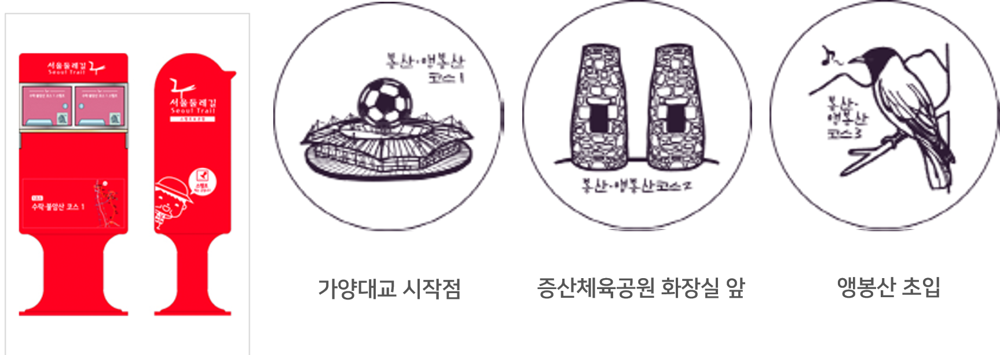

7코스-봉산·앵봉산코스
7코스-봉산·앵봉산코스 마포구,은평구 17km 6시간 30분 중급
세부코스정보
서울 둘레길의 7코스인 봉산, 앵봉산코스는 가양역에서부터 출발하여 과거의 난지도로 유명한 지금의 노을공원, 하늘공원을 통과하고 2002년 이후로 많은 사람들이 찾는 월드컵경기장을 지나 진입하게 된다. 봉산과 앵봉산은 특별한 트래킹 기술을 요하지는 않으며 급한 경사지와 통과하기 어려운 곳은 정비가 잘 되어 있음에 따라 어려움은 없을 것으로 판단된다. 봉산과 앵봉산은 수국사, 서오릉 등 역사적 유산이 많아 볼거리가 다양한 것이 특징이다.

교통편
출발지 : 지하철 9호선 가양역 4번 출입구
진입로 1 : 지하철 6호선 월드컵경기장역 3번 출입구
진입로 2 : 지하철 경의선, 공항철도, 6호선 디지털미디어시티역 1번 출입구
도착지 : 지하철 3호선 구파발역 3번 출입구, 북한산 인접지
세부코스
가양역~노을공원~하늘공원~월드컵경기장~봉산~앵봉산~구파발역
관광포인트
- 서울에서 가장 아름다운 저녁노을을 볼 수 있는 문화예술공원 '노을공원'
- 난지천을 생태하천으로 복원하여 갈대가 우거지고 버드나무와 각종 식물들이 군락을 형성한 '난지천공원'
- 세조의 장남 의경세자의 극락왕생을 위해 경릉 동쪽에 정인사라는 이름으로 건립되었던 '수국사'
- 조선시대 왕실의 무덤으로 경릉, 창릉, 익릉, 명릉, 홍릉이 있는 '서오릉'
여행자 정보
- 지하철 9호선 가양역에서 시점 출발
- 코스 후반부가 비교적 어려운 등산코스로 페이스 조절이 필요함
- 서울둘레길안내센터에서 완주증을 받을 수 있음
* 도보인증안내 : http://gil.seoul.go.kr/walk/main.jsp
스탬프 정보

주요 지점 및 추천 장소

이용시간 : ※ 5:00 ~ 22:00 (월마다 유동적)
※ 하늘공원은 서울시 야생동식물 보호구역으로 이용시민 안전과 시설물 보호를 위하여 야간이용 제한
*추천*
억새축제 즐기기
하늘공원에서 열리는 억새축제는 가을철 서울의 대표 공원문화축제다.
은빛 억새꽃이 만발하는 매년 10월에 열리는데 다양한 가을밤의 향연이 벌어진다. 특히 서울의 야경을 즐길 수 있어 가을밤만이 가지는 낭만을 한껏 누릴 수 있다.
하늘공원
난지도란 이름의 쓰레기 매립장이었던 노을공원은 환경 재생사업을 통해 자연 식생지, 운동시설 및 산책로 등 시민들이 여가를 즐길 수 있는 공간으로 재탄생했다. 전망대는 가양대교와 양화대교 주변의 한강, 올림픽대로,
난지한강공원의 캠프장이 어우러진 풍경을 사계절 내내 감상할 수 있는 명소가 되었다. 맹꽁이 전기차도 운행해 전망대까지 올라가기도 편하다.
이용시간 : 05:00 - 22:00 월마다 유동적